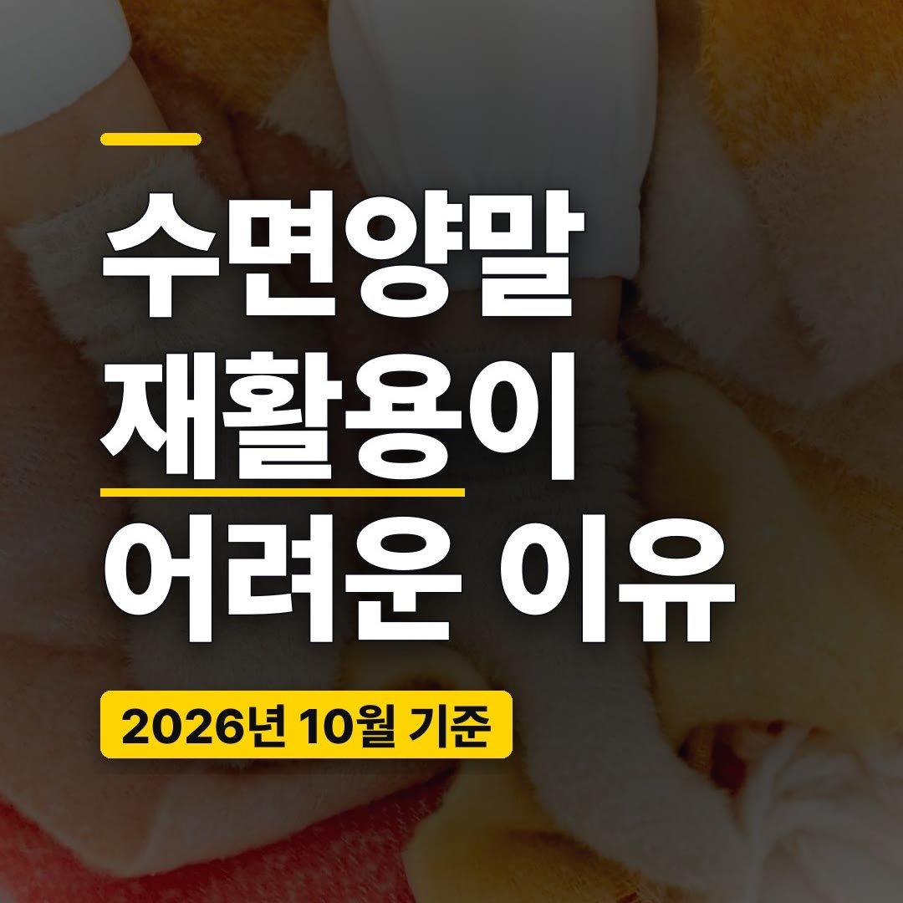
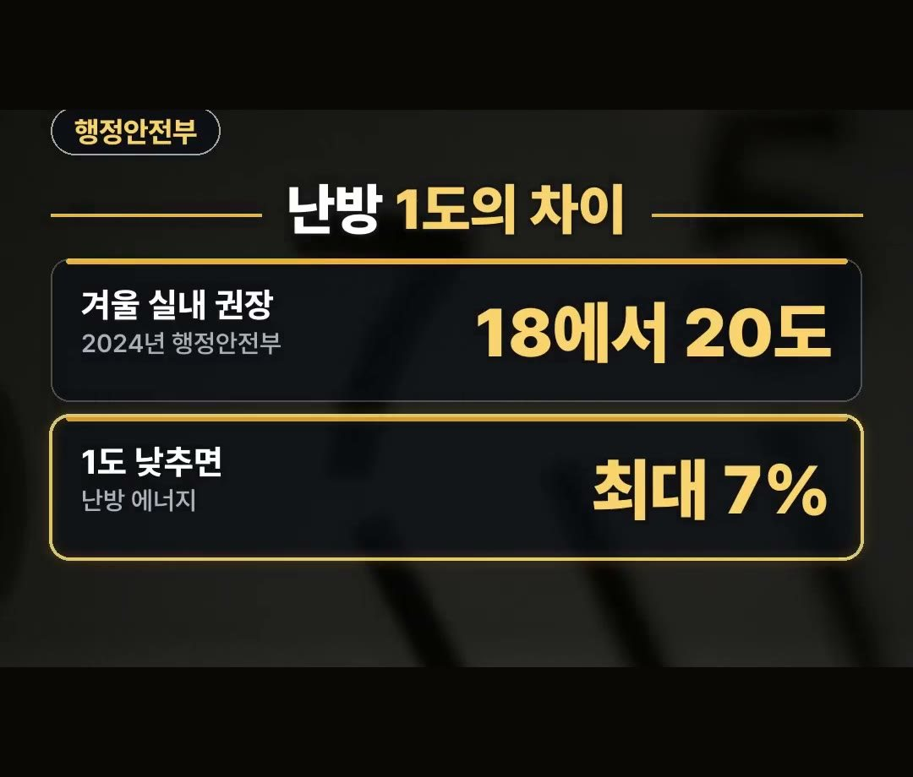
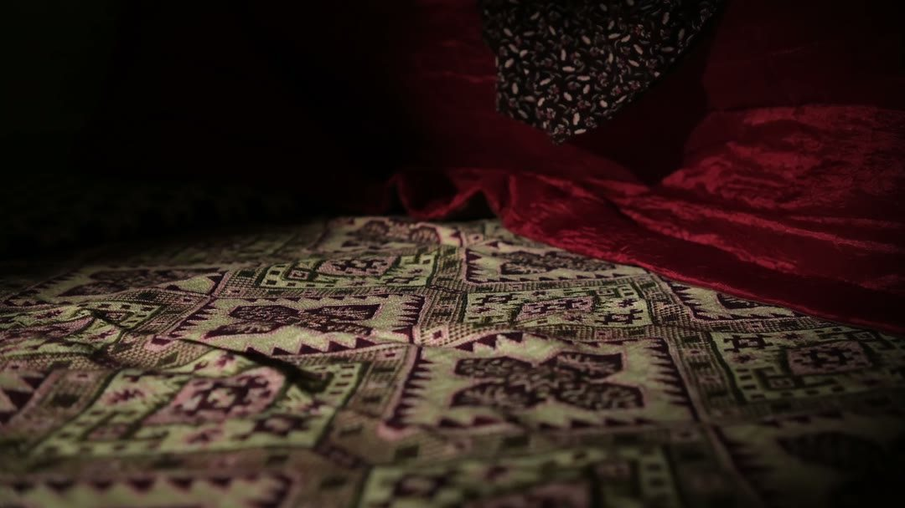
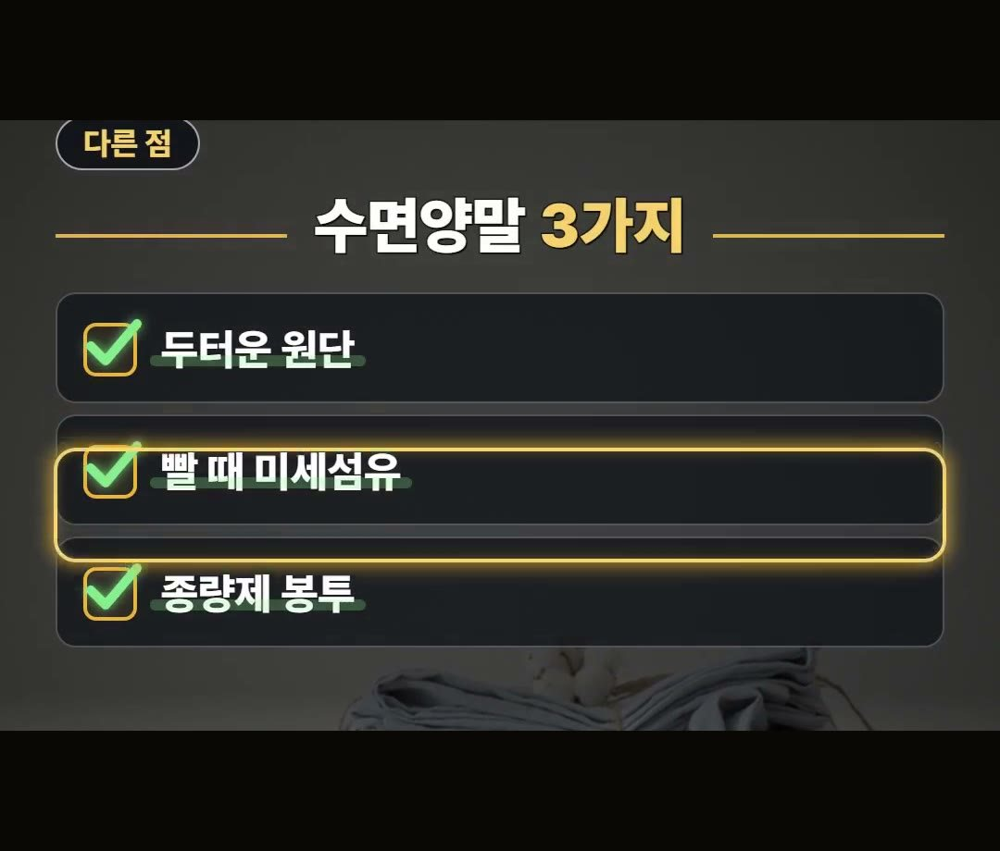
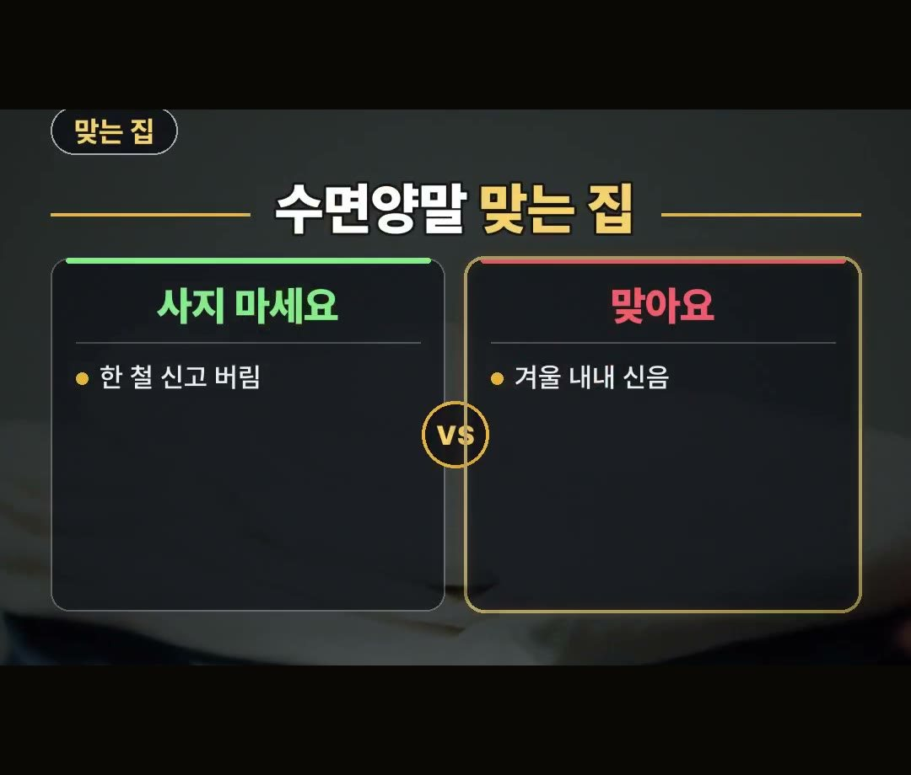

수면양말 재활용 어려운 이유, 사기 전에 볼 3가지와 보일러 1도 최대 7%
※ 이 글에는 제휴 링크가 포함되어 있으며, 링크를 통해 구매하시면 일정 수수료를 받을 수 있습니다. (가격은 같습니다)
※ 이 포스팅은 선물하기 큐레이터 활동의 일환으로, 주문 발생 시 일정액의 수수료를 제공 받습니다.
※ 이 포스팅은 쿠팡 파트너스 활동의 일환으로, 이에 따른 일정액의 수수료를 제공받습니다.
※ 이 콘텐츠는 토스쇼핑 쉐어링크 활동의 일환으로, 링크를 통한 구매가 발생하면 일정 수수료를 지급받습니다.
발만 시린데 보일러 온도부터 올리고 계시지 않나요?
그렇게 하면 발 하나 때문에 방 전체를 데우게 돼요.
이 글에서는 보일러 온도를 낮추는 공식 안내와 수면양말을 고르기 전에 알아 둘 것, 그리고 다 신은 뒤 재활용이 어려운 이유까지 정리했습니다.
2024년 행정안전부는 설정 온도를 1도 낮추면 난방 에너지가 최대 7% 준다고 안내했어요.
수면양말은 한 철 신고 버릴 거라면 사지 말고, 겨울 내내 신을 것으로 고르세요! 🧦

보일러 1도의 차이, 공식 안내로 보기
2024년 행정안전부는 겨울 실내 18에서 20도를 권했어요.
1도 낮추면 난방 에너지가 최대 7% 줄고, 수면양말 착용도 권했습니다.
- 겨울 실내 권장 온도: 18에서 20도 (2024년 행정안전부)
- 설정 온도 1도 낮추면: 난방 에너지 최대 7% 감소

2025년 한국에너지공단도 실내 온도를 20도에 가깝게 낮추면 한 달 도시가스 사용량이 5.5% 준다며, 수면양말로 체온을 지키라고 권했어요.
- 20도에 가깝게 낮추면: 한 달 도시가스 사용량 5.5% 감소 (2025년 에너지공단)
추우면 다들 보일러부터 올리게 되는데, 두 기관 모두 온도를 낮추고 몸을 따뜻하게 하는 쪽을 함께 권한 셈이에요.

수면양말 효과보다 먼저 볼 것, 면 양말과 다른 점 3가지
수면양말은 면 양말과 3가지가 달라요.
- 원단: 면 양말보다 더 두터움
- 빨래: 합성섬유 양말은 빨 때 미세섬유가 나온다고 함
- 버릴 때: 다 신으면 재활용이 어려워 대개 종량제 봉투로 버림

따뜻한 대신, 빨 때와 버릴 때까지 생각해야 하는 물건이라는 점이 면 양말과 다른 부분이에요.
수면양말 재활용이 어려운 이유와 버리는 법
수면양말은 다 신으면 재활용이 어려워 대개 종량제 봉투로 버려요.
의류수거함도 지역마다 다르지만 대개 양말은 받지 않습니다.
사는 곳의 배출 방법은 지역마다 다를 수 있으니 버리기 전에 한 번 확인해 보세요.
그래서 수면양말은 싸다고 여러 켤레를 사서 한 철 신고 버리는 물건이 되면 아쉬워요.
오래 신을수록 버리는 양이 줄어듭니다.
수면양말 추천 전에, 맞는 집과 안 맞는 집
- 사지 마세요: 한 철 신고 버릴 집
- 맞아요: 겨울 내내 신을 집

이런 제품도 있어요.
상품 설명에 따르면 발목 털 양털 덧신 수면양말 3켤레 구성이에요.
겨울 내내 돌려 신을 집이라면 이런 묶음 구성을 견주어 보는 것도 방법입니다.
사기 전에 따져 볼 것
수면양말을 고르기 전에 아래를 먼저 적어 보세요.
- 이번 겨울 내내 신을 건지, 한 철만 신을 건지
- 몇 켤레를 돌려 신을지
- 합성섬유인지 상품 설명에서 확인하기
- 우리 지역 의류수거함이 양말을 받는지 확인하기
- 다 신은 뒤 종량제 봉투로 버리게 된다는 점 알아 두기
보일러 온도를 1도 낮추는 것과 발을 따뜻하게 하는 것은 함께 가는 이야기예요.
대신 수면양말은 버릴 때 재활용이 어려운 물건이니, 처음부터 겨울 내내 오래 신을 만큼만 고르는 쪽이 낭비가 적습니다.
정리
- 2024년 행정안전부는 겨울 실내 18에서 20도를 권하고, 설정 온도 1도를 낮추면 난방 에너지가 최대 7% 준다고 안내
- 2025년 에너지공단은 20도에 가깝게 낮추면 한 달 도시가스 사용량이 5.5% 준다며 수면양말을 권함
- 수면양말은 대개 재활용이 어려워 종량제 봉투로 버리니(지역마다 다를 수 있음) 겨울 내내 오래 신을 것으로
링크는 아래에 모아 두었어요.
📌 2026년 10월 기준 정보예요. 가격은 시기에 따라 달라질 수 있어요.
· 대한민국 정책브리핑(행정안전부 겨울철 난방비 절약 2024)
· 에너지플랫폼뉴스(에너지공단·전기협회 캠페인 2024)
사진·영상사진·영상: Pexels (HAŞİM PALTA, KATRIN BOLOVTSOVA, Kateryna Hnidash, Magda Ehlers, WeStarMoney Rec, cottonbro studio)